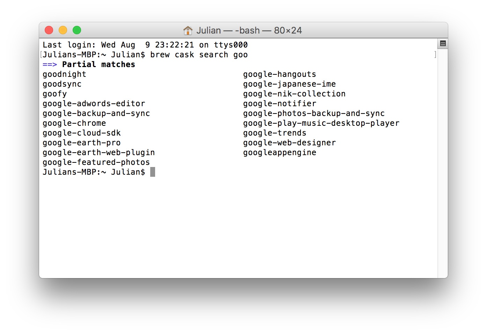
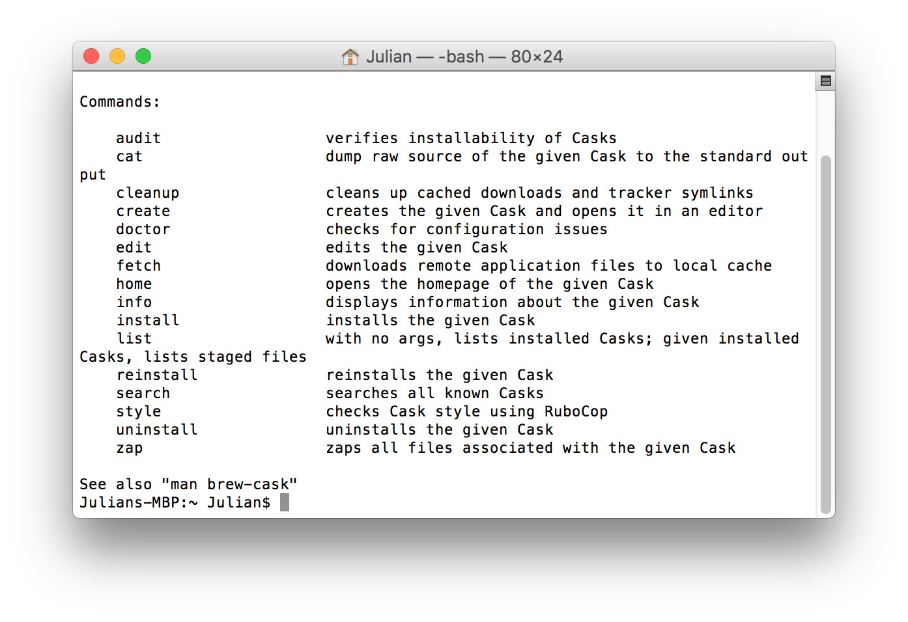

本文被少数派精选：点此查看
以新手的视角说说 Homebrew Cask，通过此文，希望同为新手的我们可以更加理解 Homebrew Cask，也更频繁地使用它安装不上架 Mac App Store 的应用，让生活少一些繁琐。
Homebrew 是一款开源的软件包管理系统，用以简化 macOS 上的软件安装过程，可以类比于 Windows 上软件管家的一键安装。Homebrew 在 2009 年由马克斯·霍威尔（Max Howell）写成，它在 GitHub 上拥有大量贡献者，目前仍处于活跃状态。
Homebrew Cask 是 Homebrew 的扩展，借助它可以方便地在 macOS 上安装图形界面程序，即我们常用的各类应用。Homebrew 中文含义为自制、自酿酒，Cask 中文含义为桶、木桶，桶装酒是一种成品，也就是说每一个 homebrew cask 都可以直接使用的，比如 Atom 的 Cask 名称为 atom，那么就可以使用如下命令安装：
brew cask install atom

甚至也可以提交新的 Cask，比如假设有桌面客户端少数派，则用 brew cask create sspai 创建新的名称为 sspai 的 Cask，当然还要提供官网下载链接、官方主页、应用版本等信息，可以参照 官方教程，此处就不再细说。
安装 Homebrew Cask
如未安装过 Homebrew 可参照 官网方式 安装：
/usr/bin/ruby -e "$(curl -fsSL https://raw.githubusercontent.com/Homebrew/install/master/install)"
将以上命令粘贴至终端中执行。然后执行 命令 brew tap caskroom/cask 获取 Homebrew Cask。
如果有错误提示，可在终端中执行 xcode-select --install，在弹出的窗口选择 Install 以安装 Command Line Tools，路径为 /Library/Developer/CommandLineTools，如要卸载，删除此文件夹即可。当然也可以到 Mac App Store 安装体积庞大的 Xcode。
如何使用 Homebrew Cask
brew cask install 应用名称
brew cask install <甲应用名称> <乙应用名称> <丙应用名称>
前文已经讲过这个安装命令，但一个问题是：如何确认它支持所要安装的应用？
brew cask search 关键字
比如要确定是否支持应用 gooooooogle，可搜索关键字 goo，即可显示所有包含 goo 的应用。如果不加关键字，会显示出所有支持的应用名称。

由于 Homebrew Cask 还不支持更新应用，故建议使用应用自带的方式进行更新。欲要查看其他命令，可在终端执行 brew cask help 以显示所有 commands，比如发现查看应用 Cask 信息的命令是 info，则在终端执行 brew cask info 应用名称 即可显示该应用信息。

Homebrew Cask 原理
之前，是用软链接的方式将应用链接到 Application 文件夹，有人说这样的方式会导致 Spotlight 无法检索到。但现在，它是将应用直接移动到 Application 文件夹，这与我们自己去官网下载应用再安装是完全一致的，后续更新或卸载也按平常的方式即可。
当然，也可以用 brew cask uninstall 应用名称 的方式，这种方式才会删除路径 /usr/local/Caskroom 中保留的应用信息文件，这样当我们用命令 brew cask list 查询已安装列表时，已卸载的应用才不会仍显示。也就是说，如果按照平常的方式，比如直接移到废纸篓，那么还需手动删除 Caskroom 中的应用信息文件。当然，不删除也没啥影响，因为一般没必要查看已安装列表，已安装应用在 Launchpad 中查看就好。
总结
我们可以查阅 官方使用说明 以了解 Homebrew Cask 命令别名、高级搜索语法等用法。通过这种方式安装应用，与我们平时的方式安装应用，两者除了方式没有任何其他区别，那为何不尝试尝试这种轻松的方式呢？只一句命令，没有那些点击，没有那些拖动…… Homebrew Cask 让非 Mac App Store 应用的安装更轻松，若你也想以更轻松的方式安装和更新 Mac App Store 应用，请参阅 终端上的 Mac App Store「mas」让应用的安装与更新无比轻松。
本文应用版本：
Homebrew v1.3.1
Homebrew-Cask v1.3.1